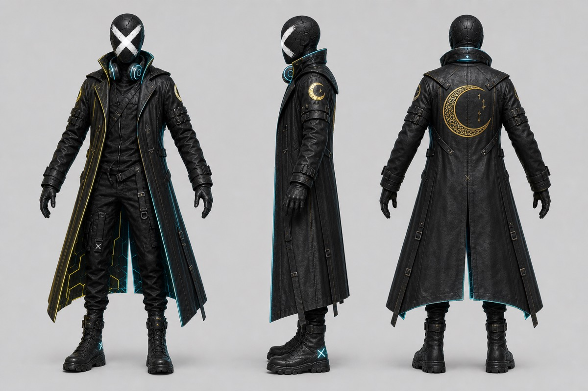
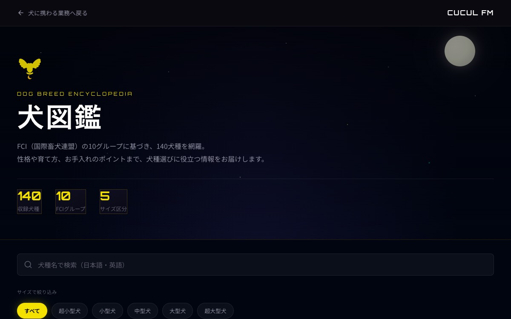

WEB & 3D
CUCUL FM 公式サイト
7つの事業領域、Three.js × GSAP のヒーロー、許可のないクライアントは出さない。企画から実装まで内製したコーポレートの型です。
WEB & 3D DESIGN
先に決めるのはページ数ではなく、事業の数と、トップに出さないものです。 公式サイトの3D、キャラクターのビューア、図鑑のUIがいま出せる実績です。
SERVICES
領域を先に固定し、トップと事業1ページずつで公開する。本サイトの7領域が型です。クライアント事例は許可が出てから掲載します
コンセプトからGLB、Three.jsでの組み込みまで。トップは物語、ビューアは検証。WebGLが落ちてもSVGが残る前提で組みます
公開に耐えるものだけ実績に出す。図鑑は検索とフィルタを先に設計しています
PROCESS
色やCMSの前に、領域の数・トップに出さないもの・問い合わせを固定します。本サイトでは事業を7つに分け、AIを先頭にしています。
「何でもやります」をトップに置かない。7枚でも、feat. と一文で主従を付ける
コーポレートはトップ＋領域1枚が先。このWeb事業も下層を切らず、本ページを厚くする
自社サイトと自社キャラ以外のクライアントは、公開許可があるまでカードにしない
3D
ネオン・ファントムDJはロゴの人物を全身にしたキャラクターです。トップでは Three.js と GSAP でスクロールに乗せ、確認用の操作はビューアに分けています。GLBが読めない環境ではSVGの胸像が残ります。
?nochar3d=1、動きを減らす設定PORTFOLIO

WEB & 3D
7つの事業領域、Three.js × GSAP のヒーロー、許可のないクライアントは出さない。企画から実装まで内製したコーポレートの型です。

3D DESIGN
コンセプトアートからGLB、Webリアルタイム表示まで。クリックでビューアを操作できます。トップとは役割を分けています。

WEB / APP
和名・英名の検索、サイズとFCIグループ。犬種ごとの写真つきで、性格とお手入れの目安を比較できます。
クライアント案件は公開許可の得られたものから掲載します。
FDE & AI IMPLEMENTATION
Webサイトや業務システムの制作だけでなく、業務の流れと情報の置き場所を理解したうえで、 AI・データ・既存ツールを組み合わせ、導入後の定着・継続改善まで伴走する支援も行っています。
FDE・AI実装支援の詳細を見る